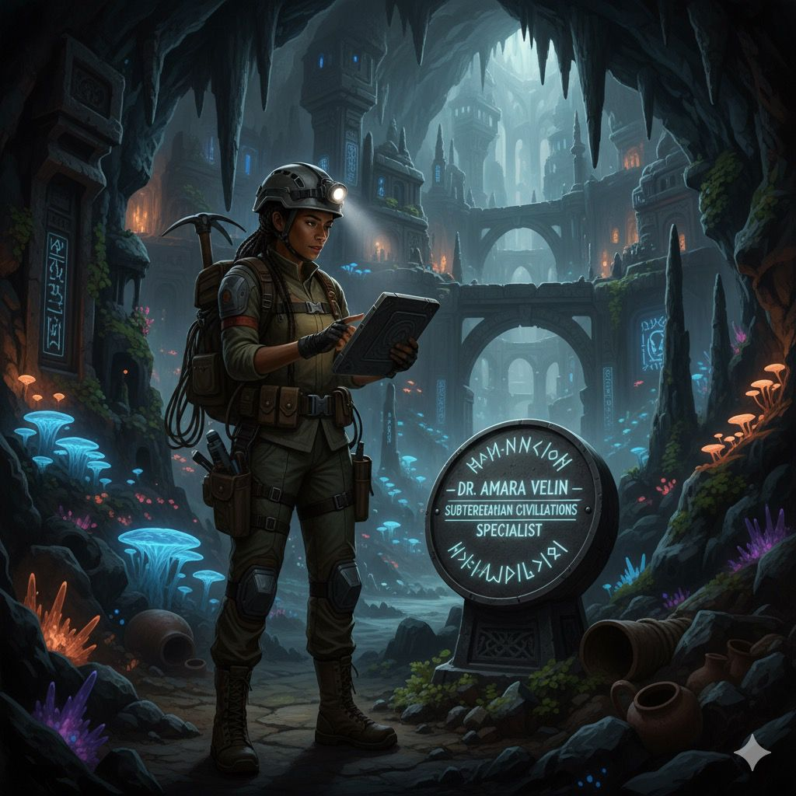

Archaeologist — Specialist in Subterranean Civilizations
Dr. Amara Velin
Dr. Amara Velin (PhD, University of Edinburgh) specializes in underground temples and tunnel sanctuaries. She uses drone GPR and 3D photogrammetry to reveal lost urban networks.
PhD Archaeology
Drone GPR
Photogrammetry
Special note: 2024 UNESCO Field Innovation Award recipient.